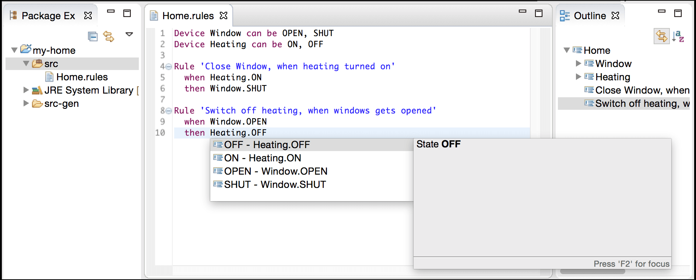
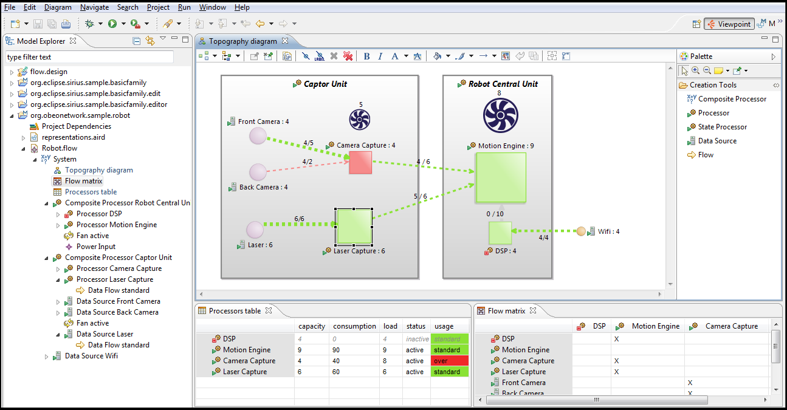
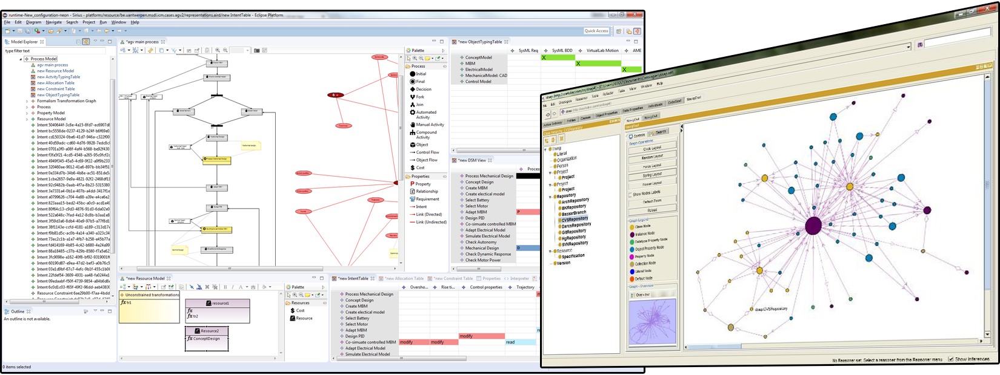

Project topics for MDE students
Contact person: Istvan David.
Remark: should you have any questions regarding the topics, or have any new project ideas, do not hesitate to contact me.
Topic group #1: Design of DSLs with Xtext and Sirius
Domain-specific languages (DSL) are integral parts of nowadays' engineering practice. As opposed to elaborate and generic-purpose modeling languages (such as the UML), DSLs are tailored to a specific problem of a specific domain. Due to this narrow scope, newly arising problems require development of new DSLs and that, in a rapid and eficient way.
By choosing one of these topics, you will have the opportunity to get acquainted with the fundamentals of DSL design, and more specifically: design of textual DSLs with Xtext and design of visual DSLs with Sirius.
 
[1] A language for modeling performance metrics and KPI of engineering processes (Xtext)
Background
- Engineering Process Transformation to Manage (In)consistency, I. Dávid, J. Denil, K. Gadeyne, H. Vangheluwe, 1st International Workshop on Collaborative Modelling in MDE, 2016
- Process Cost Modeling: Strategic Engineering and Economic Evaluation of Materials Technologies, F. Field, R. Kirchain, R. Roth, JOM (2007) 59: 21. https://doi.org/10.1007/s11837-007-0126-0
[2] A language for modeling constraints of characteristics in cyber-physical systems (Xtext)
Background
- Modeling and Enactment Support for Early Detection of Inconsistencies in Engineering Processes, I. Dávid, B. Meyers, K. Vanherpen, Y. Van Tendeloo, K. Berx, H. Vangheluwe, 2nd International Workshop on Collaborative Modelling in MDE, 2017.
[3] A visual modeling language for streaming model transformations (Sirius)
Background
- Foundations for Streaming Model Transformations by Complex Event Processing, I. Dávid, I. Ráth, D. Varró, International Journal on Software and Systems Modeling, pp 1--28, 2016. DOI: 10.1007/s10270-016-0533-1. [Open access pdf].
- The "Physics" of Notations: Toward a Scientific Basis for Constructing Visual Notations in Software Engineering, D. L. Moody, IEEE Transactions on Software Engineering, vol. 35, no. 6, pp. 756-779, November/December, 2009.
[4] A tool for viewpoints modeling and optimal formalism/tool selection in multi-paradigm modeling settings (Sirius)
Background
- Viewpoints, formalisms, languages, and tools for cyber-physical systems, D. Broman, E. A. Lee, S. Tripakis, M. Törngren, Proceedings of the 6th International Workshop on Multi-Paradigm Modeling Pages 49-54
- Modeling and Enactment Support for Early Detection of Inconsistencies in Engineering Processes, I. Dávid, B. Meyers, K. Vanherpen, Y. Van Tendeloo, K. Berx, H. Vangheluwe, 2nd International Workshop on Collaborative Modelling in MDE, 2017.
Topic group #2: Theory of model transformations
These topics dig deeper into the theoretical side of model transformations.
[5] Streaming model transformations by hierarchical timed automata
Background
- Foundations for Streaming Model Transformations by Complex Event Processing, I. Dávid, I. Ráth, D. Varró, International Journal on Software and Systems Modeling, pp 1--28, 2016. DOI: 10.1007/s10270-016-0533-1. [Open access pdf].
- Real-time statechart semantics, H. Giese, S. Burmeister, TechReport tr-ri-03-239, University of Paderborn (2003).
Topic group #3: Application of ontologies
System modeling is a prevailing paradigm in nowadays' engineering. Even though tool providers offer mature and seasoned modeling tools, the actual modeling process is still a challenge, because it requires a good understanding of the problem and its context, something often referred as domain knowledge. Ontologies are a formal system for modeling domain knowledge. Much like in standard modeling languages (such as UML class diagrams), knowledge is captured by using types types, properties, and interrelationships of the entities. Ontologies are typically used to infer new knowledge from known domain facts; and for identifying contradictions, i.e. flaws in the knowledge base. As an emerging technique in systems engineering, ontologies are expected to become integralpart of the next generation of engineering/modeling tools.
By choosig one of these topics, you will have the opportunity to get acquainted with the fundamentals of ontology-based modeling.

[6] Enhancing engineering process models with domain-specific knowledge
Background
- Ontology Development 101: A Guide to Creating Your First Ontology, N.F. Noy, D. L. McGuinness, Stanford knowledge systems laboratory technical report KSL-01-05 and Stanford medical informatics technical report SMI-2001-0880
- Modeling and Enactment Support for Early Detection of Inconsistencies in Engineering Processes, I. Dávid, B. Meyers, K. Vanherpen, Y. Van Tendeloo, K. Berx, H. Vangheluwe, 2nd International Workshop on Collaborative Modelling in MDE, 2017.
[7] Constraint exploration by Bayesian reasoning
Background
- Bayesian Reasoning Over Models, S. J. Herzig, C. J. Paredis. In 11th Workshop on Model-Driven Engineering, Verification and Validation MoDeVVa 2014, pages 69--78, 2014.
- Modeling and Enactment Support for Early Detection of Inconsistencies in Engineering Processes, I. Dávid, B. Meyers, K. Vanherpen, Y. Van Tendeloo, K. Berx, H. Vangheluwe, 2nd International Workshop on Collaborative Modelling in MDE, 2017.
Topic group #4: SAT solving, constraint programming
Imperative algorithms are not always the most appropriate techniques to tackle certain engineering problems. Consraint solvers and boolean satifiabiality solvers provide a viable alternative where the solution to a problem is not defined in terms of executable steps (as in standard programming), but rather in terms of constraints that have to be satisfied. A dedicated solver then attempts to satisfy the system of constraints to come up with a set of solutions.
By choosig one of these topics, you will have the opportunity to get acquainted with state-of-the-art SAT solvers within the context of MDE problems.
[8] Process scheduling and optimization by constraint solving
Background
- Engineering Process Transformation to Manage (In)consistency, I. Dávid, J. Denil, K. Gadeyne, H. Vangheluwe, 1st International Workshop on Collaborative Modelling in MDE, 2016
- Resource-Constrained Project Scheduling: Models, Algorithms, Extensions and Applications, C. Artigues, S. Demassey, E. Neron, ISTE, 2007.
- A MiniZinc Tutorial, K. Marriott, P. J. Stuckey [PDF]
[9] Inconsistency resolution by constraint solving
Background
- Engineering Process Transformation to Manage (In)consistency, I. Dávid, J. Denil, K. Gadeyne, H. Vangheluwe, 1st International Workshop on Collaborative Modelling in MDE, 2016
- A MiniZinc Tutorial, K. Marriott, P. J. Stuckey [PDF]